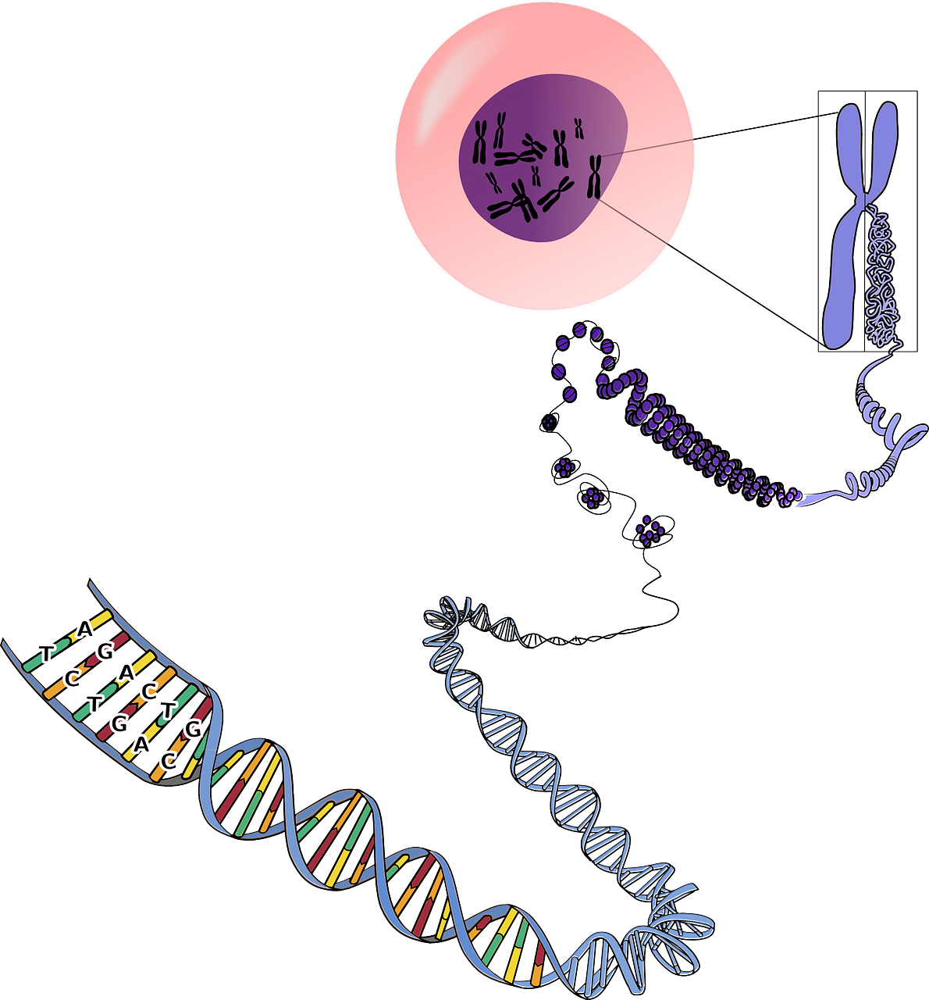
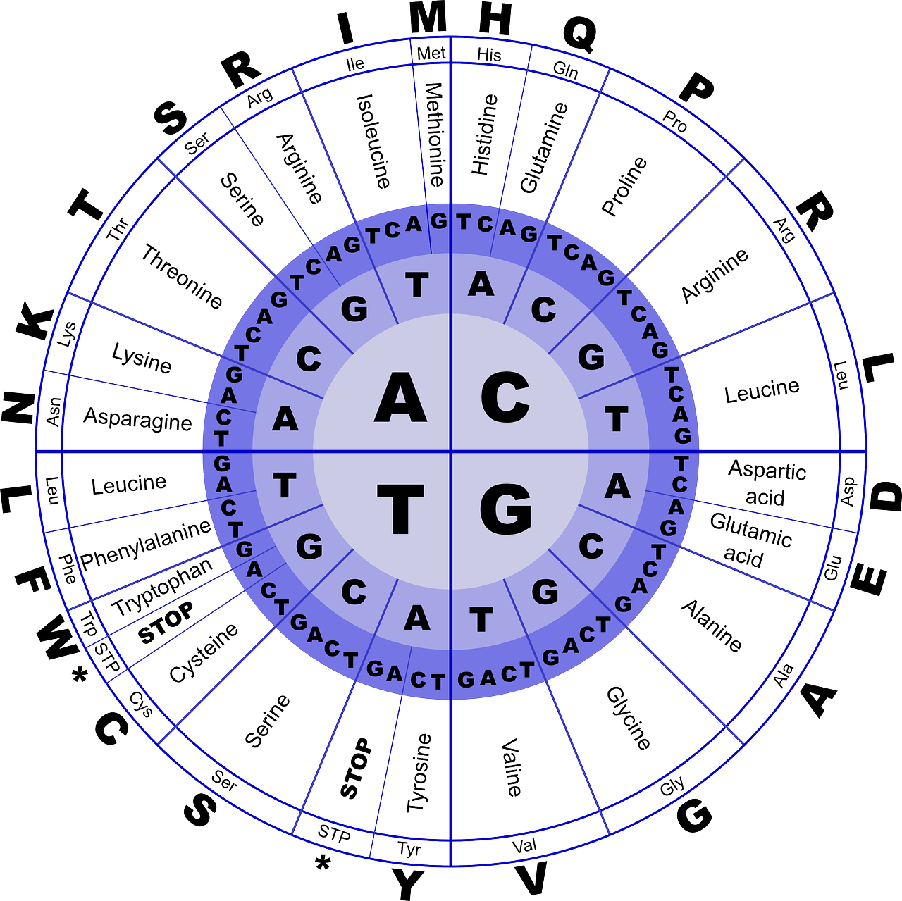
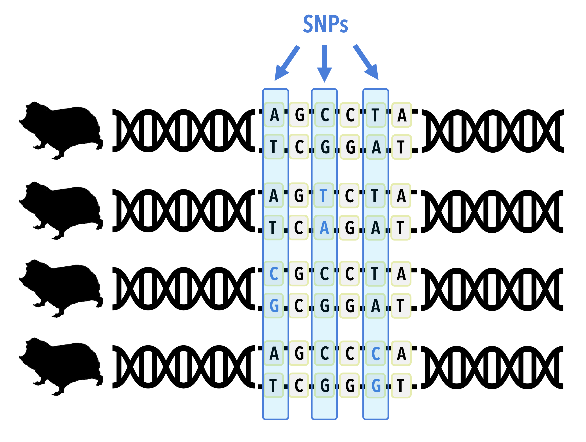
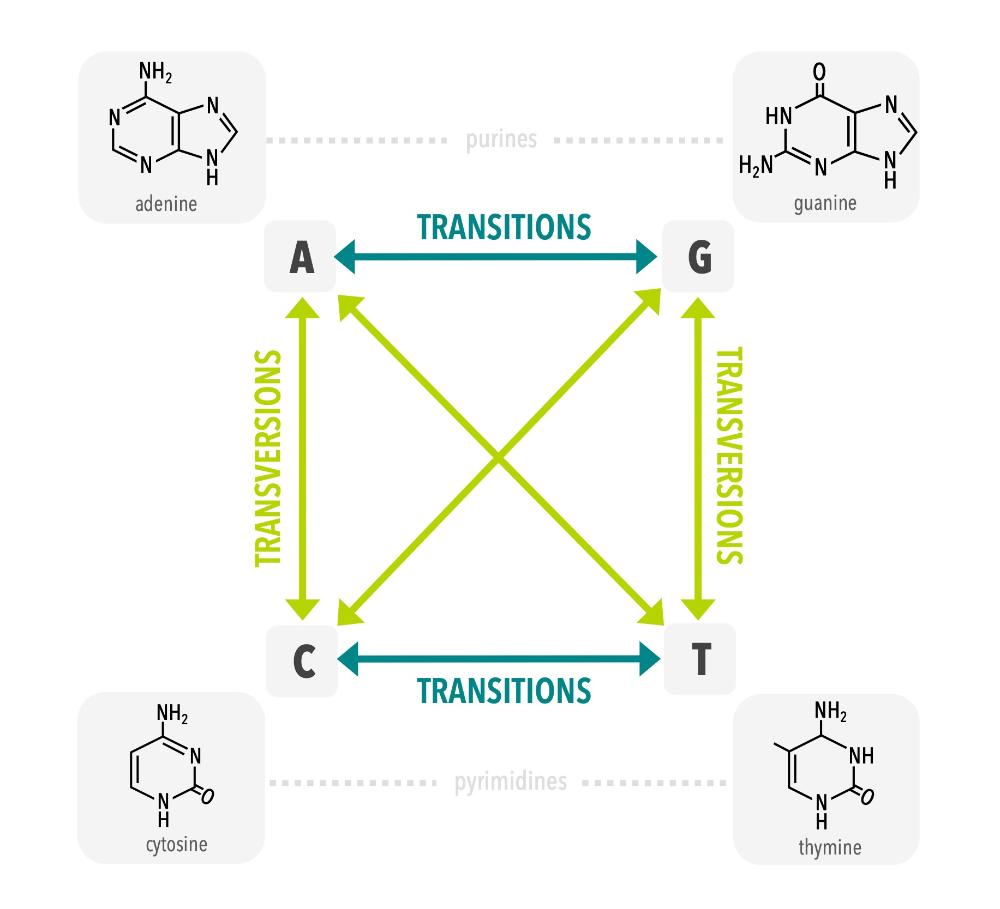
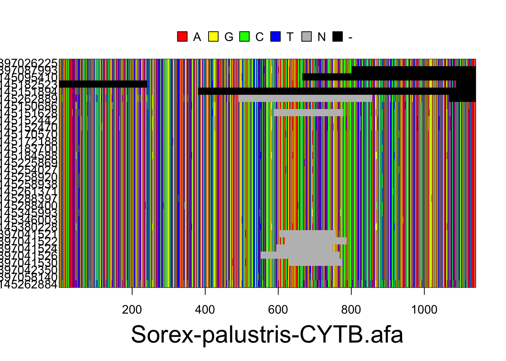
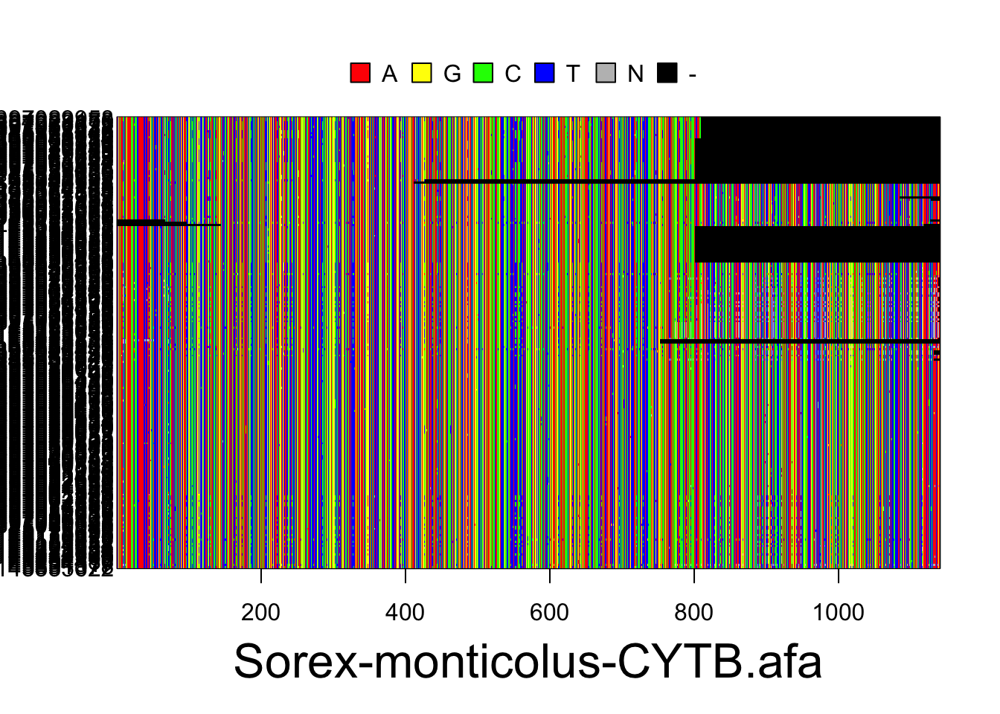
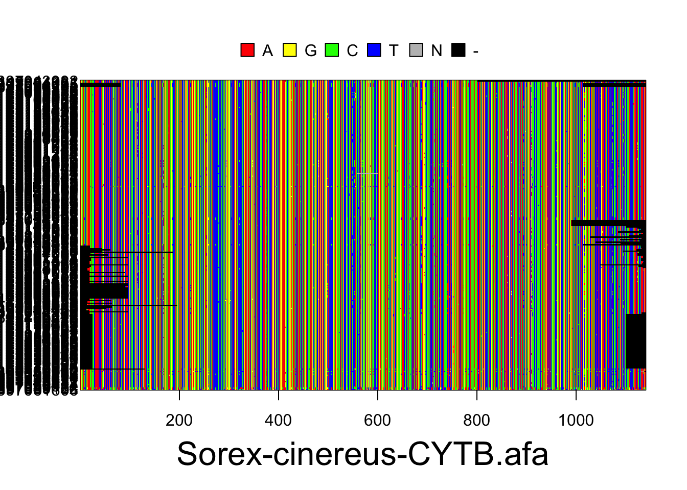
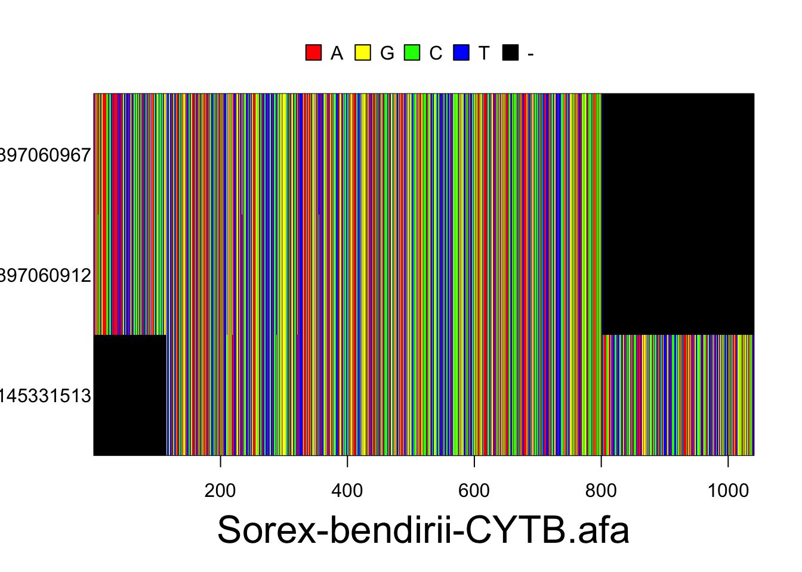
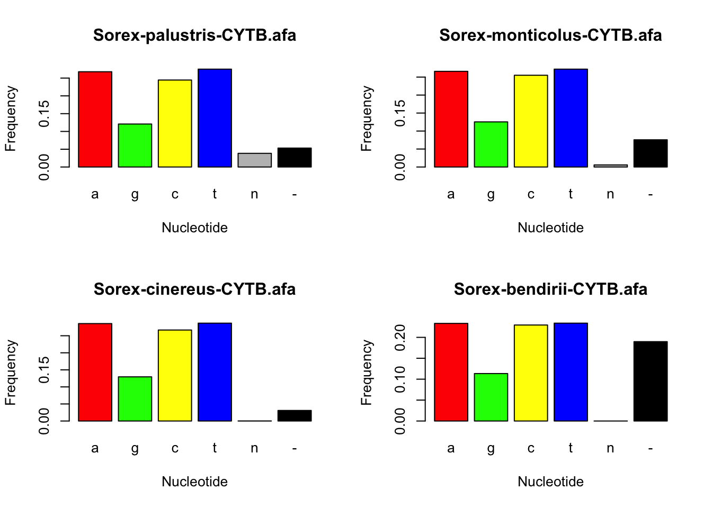
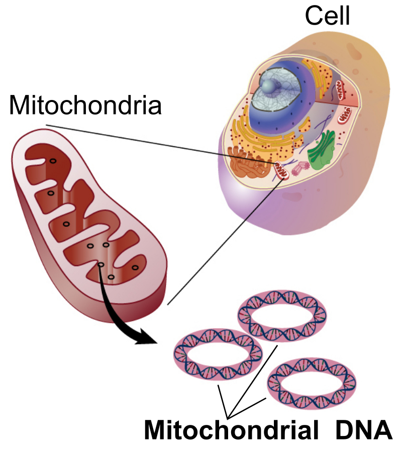

3 DNA
Deoxyribonucleic acid (DNA) is a molecule that consists of two chains that coil around each other to form a structure that looks something like a twisted ladder and is known as a double helix. The sides of this ladder are composed of sugars and phosphates, with the rungs of the ladder composed of nucleotides that occur in one of four forms: Cytosine and Thymine, are known as Pyrimidines because their molecules are made of one ring; Guanine and Adenine, are known as Purines because their molecules are made of two rings. These nucleotide bases (Adenine, Cytosine, Guanine, and Thymine) form hydrogen bonds at the center of each rung of the DNA ladder to hold the whole structure together. These bonds occur in a complementary manner, with Purines always bonding to Pyrimidines. Because Adenine and Thymine have two available spots for hydrogen bonds these nucleotide bases always bond to each other; similarly, Guanine and Cytosine both have three available spots for hydrogen bonds and thus always bond to each other. This complementary bonding in combination with the double helix structure has several important ramifications: it allows an almost endless variation in the sequence of individual nucleotide bases while simultaneously making the molecule very stable, and it enables the sequence of these bases to be repeated on each side of the ladder. The complementary bonding (i.e., A—T and C—G) allows the total sequence to be a reverse complement on either side of the ladder. However, the ladder metaphor is not perfect, as DNA shares some important characteristics with a zipper as well because its reverse complementarity allows it to be unzipped for two different purposes: to serve as the instructions for making proteins (see section 3.1) and during the process of cell division. During cell division, the set of DNA in the nucleus of the parent cell is replicated in order to provide an exact copy in each of the daughter cells via the process of mitosis. Some cells, which are known as gametes, undergo a special process of incomplete replication referred to as meiosis in species that reproduce sexually. This allows the gametes from the mother and father to be combined in their offspring.

Figure 3A: Structure of DNA. Image from pixaby.com.In practice, when geneticists sample DNA from a natural population they mostly do not have information about the relationships among individuals that are sampled. They are, however, able to take tissue samples, extract DNA for sequencing or genotyping, and derive information from these samples. On a basic level, every sample contains DNA sequences of some type, and information such as the length of the sequence, the DNA base composition (i.e., the proportion of A’s and C’s and G’s and T’s) and the variation within this sample are useful. In order to learn how this information is used, a brief review of the ultimate source of genetic variation is required.
3.1 The genetic code
DNA provides the instructions for making the proteins that make up the cells of all organisms and the bodies of plants, animals, and fungi. This process occurs via a process where DNA is translated into RNA (with Uracil substituting for Thymine) from which chains of amino acid are transcribed in the cell into the three-dimensional structures of proteins. Ultimately, the instructions for making a given protein flows from triplets of nucleotide bases called codons, where three bases describe the recipe for one of 20 amino acids, for the entire length of the gene. Since there are four different nucleotide bases assembled into sets of three bases that code for a particular amino acid, there are more combinations of three bases (43 = 64, to be exact) than amino acids (20). For this reason, the mapping of codons to amino acids has inherent redundancy, where different triplets of nucleotides can code for the same amino acid. When different codon triplets can code for the same amino acid, the first and second nucleotides in the codon will always correspond to a particular amino acid but the third position may be redundant. In addition, there are special codons such as ATG and AGA that start and stop protein synthesis. This correspondence between nucleotide codons and the amino acids that are ultimately produced is known as the genetic code.

Figure 3B: The genetic code describes the correspondence between nucleotide codons and the amino acids which are ultimately generated from their sequences. Image from pixaby.com.3.1.1 Practice: Translate the following DNA sequence into amino acids
First, load the packages required for the following exercises. You might get some warning messages, but these are usually ok, so we’ll ignore them for now. Make sure all the packages are installed first, and if R asks if you’d like to update other packages, it’s usually ok to click yes.
library(seqinr)
library(ape)
library(apex)In the code below, we will first generate a DNA sequence in R using the as.vector function. Then, we will translate the DNA sequence into the corresponding sequence of amino acids. You can change the nucleotide bases (i.e., a, t, c, and g) in the first line of code below to see what (if any) changes occur to the amino acid sequence.
#create DNA sequence by creating an object in R called 'dna'
dna <- as.vector(c("c","c","g","c","a","t","t","a","c","c","t","a","c","a","g","g","g","t","g","c","a","a","c","t","c","g","a"))
#print DNA sequence to screen
dna## [1] "c" "c" "g" "c" "a" "t" "t" "a" "c" "c" "t" "a" "c" "a" "g" "g" "g" "t" "g"
## [20] "c" "a" "a" "c" "t" "c" "g" "a"#translate DNA sequence using the R function 'translate'
aminoseq1 <- noquote(translate(dna))
#print amino acid sequence to screen
aminoseq1## [1] P H Y L Q G A T R3.2 Mutation
While the DNA molecule is very stable, occasionally there are mistakes in the process of replication when DNA is being copied. When these occur during mitosis in somatic cells, the result can sometimes lead to cancerous growth, but most often do not cause any big changes. Mistakes that occur during meiosis in the gametic cells are passed on to the next generation and can sometimes impact the offspring. These mistakes, known as mutations, are exceedingly rare – one estimate from humans ([Nachman & Crowell 2000](/phylogatr/book/references.html)) suggests that they occur on average at a rate of 2.5 x 10-9 (0.000000025) mutations per nucleotide per site per generation. This means that on average, a particular site in the human genome has a mutation less than once in every 10,000,000 generations. However, mutations occur in a random manner and there are a lot of sites in the human genome – 3,200,000,000 x 2 (because there are two copies) in total. This leads to a bit of a paradox: even though the odds of a mutation occurring at a particular site in the genome for any given individual are extremely low, there are so many sites that all individuals have a small number of mutations in comparison to their parents. For example, a typical human baby has a couple of dozen sites that differ from the corresponding site in their parent due to a mutation that occurred in that parent’s gamete. Most of the time these mutations are benign because they either occur in parts of the genome that are not associated with function (producing proteins or regulating gene expression), or because if they occur in a gene that makes a protein, they occur in a redundant nucleotide base that does not change the amino acid produced. Rarely, these mutations do occur in a protein coding gene and do change the amino acid that is produced by the protein and natural selection may act to change its frequency.
3.3 Synonymous versus non-synonymous genetic variation
Mutations that introduce new alleles into a population are the raw material from which natural selection acts upon to produce evolutionary change. For most populations of a given species, the process of mutation acting over time has produced more than one sequence of DNA nucleotide bases at a given genetic locus, a location in the genome that consists of some number of nucleotides. These variants are referred to as alleles; each allele is a slightly different version of a given gene. Many times, the variants are not functionally different because the mutations occur in redundant positions in the codon. Such variants are referred to as synonymous variants because the amino acids that are produced are ultimately the same. Conversely, if a mutation occurs in a nucleotide base that does lead to a new amino acid, such changes are known as non-synonymous. In these cases, the resulting protein will be different. The likely result of non-synonymous change is a version of the protein that is no better, and usually worse, than the version that exists in the population, although rarely the random process of mutation will lead to an improved version of the protein. An individual that lucks into an improved version of a protein may ultimately be more fit and have more offspring than it otherwise would have had because it confers some advantages to the individual. For example, the improved version of the protein could enable that individual to extract more energy from a food resource. Over many generations, the increase in reproductive success for individuals that have the improved version of the protein would lead to an increase in the frequency of the allele that produced this version of the protein. Over time, evolutionary change will occur.
3.3.1 Practice: Introduce a mutation
By changing the nucleotide bases we are introducing a mutation. In the code below, we have switched the 6th nucleotide base from a t to a c. Run the following code to determine how this single nucelotide mutation affects the amino acid sequence.
dna <- as.vector(c("c","c","g","c","a","c","t","a","c","c","t","a","c","a","g","g","g","t","g","c","a","a","c","t","c","g","a"))
noquote(translate(dna))## [1] P H Y L Q G A T RCompare this amino acid to the sequence from the previous example in section 3.1.1. Is this a synonymous or non-synonymous mutation?
Now let’s switch the 17th nucleotide base from a g to a c. Run the following code to determine how this single nuceltoide mutation affects the amino acid sequence.
dna <- as.vector(c("c","c","g","c","a","t","t","a","c","c","t","a","c","a","g","g","a","t","g","c","a","a","c","t","c","g","a"))
noquote(translate(dna))## [1] P H Y L Q D A T RCompare this amino acid to the sequence to the one above. Is this a synonymous or non-synonymous mutation? How does the new amino acid sequence differ from that resulting from the previous mutation?
3.3.2 Practice: Introduce an insertion
Now let’s see what happens when we insert an additional nucleotide base into our DNA sequence. We will insert a t after the fourth base and translate the resulting DNA sequence into the corresponding sequence of amino acids.
dna <- as.vector(c("c","c","g","c","t","a","t","c","t","a","t","a","c","c","a","g","g","g","t","g","c","a","a","c","t","c","g","a"))
noquote(translate(dna))## [1] P L S I P G C N SCompare the resulting amino acid sequence to those you generated through the mutations shown above. How do insertions compare to single-point mutations when it comes to the process of translation?
3.3.3 Practice: Calculate the proportion of single base pair mutations that are synonymous
This chunk of code runs a for loop that randomly samples a, c, t, and g base pairs one million times. A for loop is coding statement that allows you to repeat a process some number of times given a condition. The loop then introduces a random mutation for each replication, and translates the DNA sequence to its amino acid sequence. It then checks if the new amino acid sequence is identical to the original amino acid sequence.
#create an original DNA and amino acid sequence, same as above
dna <- as.vector(c("c","c","g","c","a","t","t","a","c","c","t","a","c","a","g","g","g","t","g","c","a","a","c","t","c","g","a"))
aminoseq1 <- noquote(translate(dna))
#create an empty matrix for 10000000 replications
mutations <- as.matrix(rep(NA, 1000000))
for (i in 1:length(mutations)) {
values1 <- sample(c("a", "c", "t", "g"), 1)
dnanew <- replace(dna, sample(1:length(dna),1), values1)
aminoseqnew <- noquote(translate(dnanew))
mutations[i] <- identical(aminoseq1, aminoseqnew)
}
#calculate the proportion of mutations that are synonymous i.e., the proportion of single base pair mutations did not change the resulting amino acid sequence
length(mutations[mutations == "TRUE"])/1000000## [1] 0.462907How often does the mutation lead to a synonymous change? What happens if you introduce more than one DNA mutation?
3.4 Probabilities, SNPs, and genetic variation
The genetic variation of any species describes how many copies of alleles are present in a particular locus, averaged over all of the loci in the genome. Geneticists have developed many statistics that quantify genetic variation. For example, average heterozygosity describes the proportion of individuals in a population that have two copies of an allele averaged over loci in their genome. Since each individual (at least in a diploid species) gets one copy of an allele from their mother and one from their father, individuals who inherit different versions from each parent are referred to as heterozygotes because they get different copies from each parent. An individual who inherits the same copy is referred to as a homozygote. In addition to heterozygosity, there are other measures of population variation. The most basic is simply to count the number of nucelotide changes in the aligned set of DNA sequences sampled from a population. These sites, known as Single Nucleotide Polymorphisms, or SNPs for short, can be reported either as a count or as a proportion of sites in the sequence that are variable. Other metrics, such as nucleotide polymorphism, measure the expected proportion of variable sites in a sequence of a particular length sampled as a function of sample size. These ideas will be covered more in Chapter 5 Population genetics and conservation.
Regardless of the metric used, all measures of genetic variation are influenced by a relationship between the rate of mutation and the number of individuals in the population. Essentially, larger populations are expected to have more genetic variation than smaller populations because there are more opportunities for mutations to occur. However, changes in population size influence this amount of genetic diversity. Populations that start small and grow rapidly often have less genetic diversity than we might expect due to census sizes alone. For example, human genetic diversity is more characteristic of a population of size 10,000 than our actual size of seven+ billion individuals, because the number of humans on the planet was very small prior to the agricultural revolution. On the other hand, large populations that are suddenly reduced in size will lose genetic variation if individuals carrying a given variant do not leave offspring.
In section 3.2 we introduced a concept known as the mutation rate to describe the average rate at which mutations lead to the introduction of new alleles in the population. In most species this rate is quite low, for example 2.5 x 10-9 mutations per site per generation estimated for humans. When a natural population is sampled for genetic variation, it may be the case that two or more individuals share a particular SNP at a given location in the nucleotide sequence. For example, in a codon where most of the population has a GCC, perhaps two individuals have a GAC. In such cases there are two possible explanations. It could be the case that these individuals each had a parent that independently had a mutation that changed the C to an A in the second position of the codon. Given a mutation rate of 2.5 x 10-9, the odds that this happens independently is (2.5 x 10-9)2, or 6.25 x 10-18. Your odds of winning the lottery on the same day that you are struck by lightning and attacked by a shark are much higher than this! Alternatively, these individuals could share the SNP because they each inherited this variant from a parent, and their parents inherited the same variant from their parents, etcetera until there is one individual who inherited this variant from a parent and passed it along to multiple offspring. This is far more likely to occur, in fact the rough probability is equal to 1 - 6.25 x 10-18, so much so that we interpret the presence of shared SNP variants as evidence of relatedness when they occur among individuals within species and of common ancestry when they occur between species. Understanding how individuals are related allows us to understand patterns in biodiversity!

Figure 3C: An example of single nucleotide polymorphisms (SNPs) in an aligned set of DNA sequences. Figure by Danielle J Parsons.3.5 Modeling sequence variation
Genetic variation can be used for a wide range of applications, including many that you will be introduced to in later chapters. In turn, many of these applications rely on some quantification of the genetic differences among individuals, for example by counting the proportion of different bases between any pair of individuals. However, because some types of changes are less likely than others it may be the case that a simple count does not represent the actual degree of difference between individuals accurately. For example, due to the chemical structure of the DNA molecule, mutations that replace one purine with another purine or one pyrimidine with another pyrimidine are about twice as likely as a mutation that replaces a purine with a pyrimidine or a pyrimidine with a purine. The former (i.e., like replaced with like) are known as transitions while the latter (i.e., purine replaced with pyrimidine) are known as transversions. In addition, there are some locations in the sequence that are far more important to the functionality of the synthesized protein than others. For example, mutations in the first codon position are rarer than those in the third codon position because the former always lead to a new amino acid. In addition, the three-dimensional structure of the protein can influence how important a given position in the amino acid sequence is to the overall function of the protein. For this reason, the nucleotide sites in a gene sequence effectively have varying rates of one nucleotide base being substituted for another.

Figure 3D: Types of mutations: transitions vs transversions. Figure by Danielle J Parsons.In order to measure genetic distances among individuals accurately, geneticists have developed models of DNA substitution that should be applied when analyzing sequence variation. For example, many models start with estimates of the DNA base composition, the ratio of transitions to transversions (Ti/Tv ratio), and the proportion of sites in the sequence that do not vary (proportion of invariant sites or ‘pinvar’).
3.5.1 Practice: Estimate base pair composition
We can look at the composition of nucleotide bases in genetic data that have been collected from a number of individuals from the same species. First, we will load data from phylogatR into R (more details about these sequences and how to do this yourself will follow in later chapters). Here, we’re using data from four shrew species that are stored in a folder named “phylogatr-results-DNA”.
#load data
S.pal <- read.multiFASTA(files="phylogatr-results-DNA/Sorex-palustris/Sorex-palustris-CYTB.afa")
S.mon <- read.multiFASTA(files="phylogatr-results-DNA/Sorex-monticolus/Sorex-monticolus-CYTB.afa")
S.cin <- read.multiFASTA(files="phylogatr-results-DNA/Sorex-cinereus/Sorex-cinereus-CYTB.afa")
S.ben <- read.multiFASTA(files="phylogatr-results-DNA/Sorex-bendirii/Sorex-bendirii-CYTB.afa")All the sequences for each individual for a location in the genome are aligned so they can be compared. We can plot the data from the DNA sequence alignments for visualization using the code below. The different colors represent different bases (A,T,G, and C) where each column is a different nucleotide and each individual is on a different row.
#plot data
plot(S.pal)
plot(S.mon)
plot(S.cin)
plot(S.ben)
Finally, let’s estimate the composition of base pairs present in each of our alignments. This will tell us the frequency at which each base is present in the genetic data for our chosen species. Then, we can plot these values using a bar chart, and visually compare base pair frequencies for each species.
#Estimate base pair composition
S.paldnabin <- concatenate(S.pal)
S.palvar <- base.freq(S.paldnabin, freq=FALSE, all=TRUE)
S.palvar[c(1,3,2,4,15,16)]## a g c t n -
## 0.26784539 0.12083333 0.24451754 0.27513706 0.03843202 0.05323465S.mondnabin <- concatenate(S.mon)
S.monvar <- base.freq(S.mondnabin, freq=FALSE, all=TRUE)
S.monvar[c(1,3,2,4,15,16)]## a g c t n -
## 0.265947452 0.125442754 0.255080236 0.272054544 0.005807766 0.075667249S.cindnabin <- concatenate(S.cin)
S.cinvar <- base.freq(S.cindnabin, freq=FALSE, all=TRUE)
S.cinvar[c(1,3,2,4,15,16)]## a g c t n -
## 0.2856485476 0.1294974116 0.2667888985 0.2869427668 0.0001869428 0.0309354328S.bendnabin <- concatenate(S.ben)
S.benvar <- base.freq(S.bendnabin, freq=FALSE, all=TRUE)
S.benvar[c(1,3,2,4,15,16)]## a g c t n -
## 0.2333333 0.1134615 0.2294872 0.2339744 0.0000000 0.1897436#Plot base pair frequencies
colors <- c("red", "green", "yellow", "blue", "gray", "black")
par(mfrow = c(2, 2))
barplot(S.palvar[c(1,3,2,4,15,16)], col=colors, xlab="Nucleotide", ylab="Frequency", main =names(S.pal@dna))
barplot(S.monvar[c(1,3,2,4,15,16)], col=colors, xlab="Nucleotide", ylab="Frequency", main =names(S.mon@dna))
barplot(S.cinvar[c(1,3,2,4,15,16)], col=colors, xlab="Nucleotide", ylab="Frequency", main =names(S.cin@dna))
barplot(S.benvar[c(1,3,2,4,15,16)], col=colors, xlab="Nucleotide", ylab="Frequency", main =names(S.ben@dna))
3.6 Organellar genomes and barcoding genes
By far the vast majority of DNA in Eukaryotic organisms is contained in the nuclear genome. For example, most humans have 23 pairs of chromosomes that collectively contain the approximately 6.4 billion nucleotide base pairs. However, Eukaryotes also contain small amounts of DNA in extranuclear organelles. For example, green plants have chloroplasts which are vital in the production of energy via photosynthesis, and plants, animals, and fungi contain mitochondria which are essential for respiration and energy production. In many ways, organellar DNA are easier for geneticists to work with because there can be dozens of the same organelle in a single cell, each with its own copy of DNA. When DNA is extracted from a tissue sample that contain some number of cells, there are thus many more copies of a given organellar gene than there would be for a given gene from the nuclear genome. This makes these genes easier to work with. In addition, because these organelles are the parts of the cell that are responsible for respiration, oxidative damage can lead to DNA mutation rates that may be an order of magnitude higher than in the nuclear genome. For certain types of questions, having more genetic variation in a sample can be useful because it gives us more information about a species. As a result of the fact that organellar genes were easier to sequence with the original sequencing technologies and often have more genetic variation (higher mutation rate), the phylogatR database has a disproportional number of genes from the mitochondria in animals and the chloroplast in plants.
Some genes in organellar genomes evolve so quickly that each species is likely to have a unique sequence of nucleotide bases. This fact has led to the proposal that species can be identified by using this unique sequence as a sort of DNA-based barcode, similar to how every item at the grocery store has a unique barcode that is used for identification at the checkout. Notice how the sequence alignments above kind of look like barcodes? While academic debate is ongoing about the degree to which DNA barcodes can be applied to important biodiversity studies, the possibility is tantalizing. For example, a comprehensive database of DNA barcodes could be invaluable for species identification used in the tracking of invasive species or to detect smuggling of endangered species or for use with biodiversity monitoring using environmental DNA.

Figure 3E: Mitochondrial DNA (mtDNA). Image from the National Human Genome Research Institute.